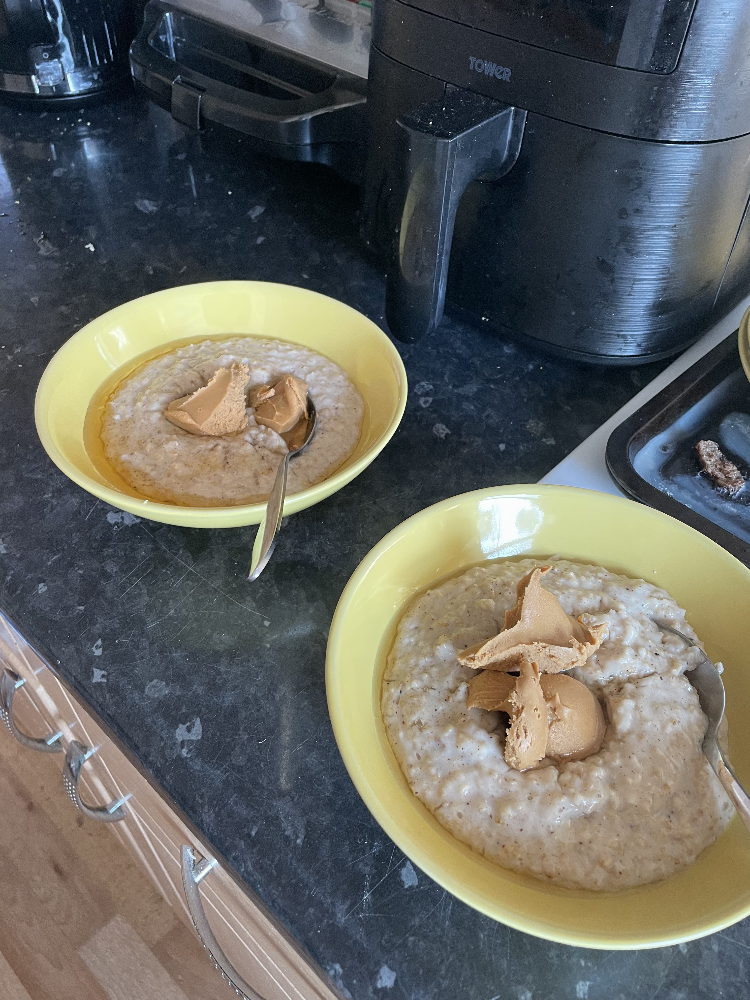

Odin Recipes | Porridge

This was a very basic porridge recipe I blagged to make us a scrumptious breakfast. That being said, I had just consumed half a tub of Ben & Jerry's...
I have long been a honey fan, and peanut butter seems to add a delicious cloying consistency to porridge that I can never get enough of. Notes of cinnamon and nutmeg also shine through to add some complexity and wintery warmth.
Ingredients
Serves two
- 1 mug full of oats
- ~300ml Milk - full-fat milk works best, but any will do, including plant-based alternatives. I imagine soya milk would work best here, but I have used oat milk in the past with success.
- Nutmeg
- Cinnamon
- Toppings of your choice - I chose honey and peanut butter here, but you could go healthy and top with fresh fruit.
Method
- Put the oats in a saucepan with rougly half of the milk and turn to a medium heat.
- Add in a dash of nutmeg and cinnamon to your preference. I used about a teaspoon of each.
- As the oats start to soak up some of the milk, add in a little more.
- Repeat this process until the oats are soft and cooked through, then add milk or cook further until the consistency is as desired, or you run out of milk... I prefer my porridge a little thicker, as that is how my dad used to make it. My mum, who is a trained chef, always made hers thinner with more milk, which I wasn't a fan of, but that seems to be the fancier style of porridge. Experiment and see what you like.
- Transfer to bowls and top with your chosen toppings. Take the consistency of the toppings into consideration: sugar-based syrups will make the porridge thinner as the sugar dissolves, and nut butters will make it thicker.
Hopefully you enjoyed the dish, or at the very least my writing style. Feel free to browse my other recipes.